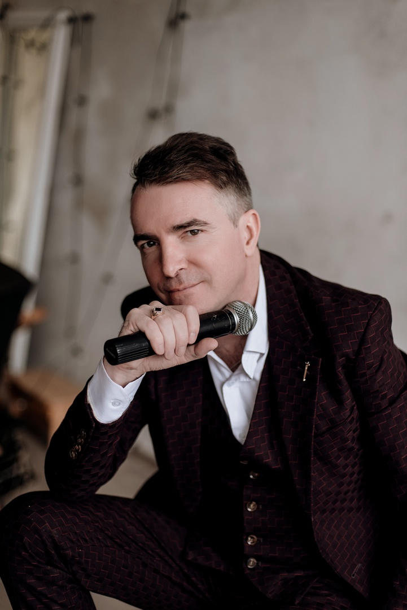
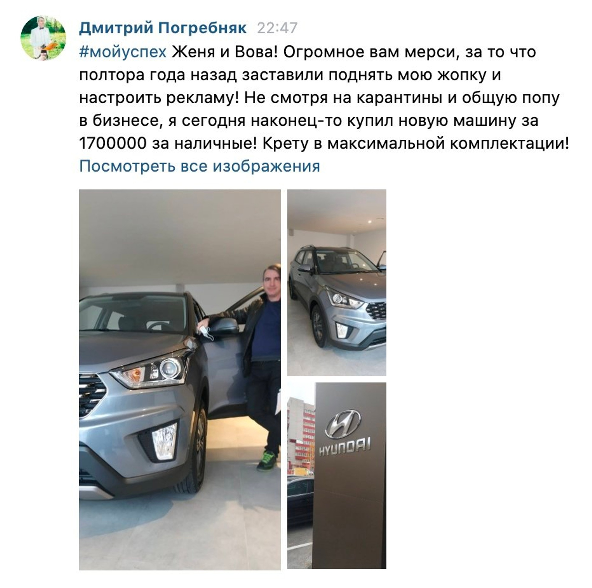

Дмитрий Погребняк, ведущий из Липецка
Когда пришел к нам на курс уже имел неудачный опыт обучения на подобных курсах. Было много сомнения и скепсиса. Но тем неменее начал внимательно применять всё что было в уроках. Начала получать заказы на свадьбе, даже не пройдя курс до конца. И несмотря на карантин 2020 года, он использовал все свои навыки, опыт в ремесле, добавил к ним маркетинг и заработал на свою мечту.

— Дим, расскажи, что было до курса, какой средний доход был в месяц? Сколько клиентов?
— До курса заказов было мало, так как-то переехали в другой город. В среднем 1 в месяц и чек был 30т.
— Какие сложности были во время обучения на нашем курсе? Насколько сложно было учиться? За сколько прошла обучение?
— Сложностей не было от слова совсем! До ВК-бабло я проходил разные курсы и есть с чем сравнить. Я купил версию "без куратора" и спокойно справился, хотя признаюсь, с куратором было бы проще. Обучение прошёл за 3 месяца, выбирая свободное время между свадьбами. И, в итоге, весь сезон забил под завязку и даже пришлось с коллегами делиться)
— Какие сейчас действия делаешь для привлечения клиентов? Как часто пишешь посты? Запускаешь ли рекламу?
— Периодически меняю приветственный пост , каждый день поздравляю друзей с днем рождения и один заказ пришёл именно от этого действия . Посты пишу нерегулярно, как настроение и время появляется, рекламу запускаю перед сезоном два раза в год.
— А можешь поделиться, как изменилась жизнь, когда увеличился доход? Может что-то купил себе? Съездил в путешествие? Что-то смог сделать, чего раньше не мог позволить себе)
— Мы купили новую машину в максимальной комплектации. Не в кредит, родили второго сына, строим новый дом в 135 квадратов, жить стало легче, жить стало веселее))

— Все, остался только вопрос, сколько был максимальный заработок? Сколько максимально в месяц? Сколько клиентов для этого понадобилось? И вот примерно сколько за год было максимально заработано?
— Максимальный чек был 120т, в месяц 280, 4 клиента было, за год максимум был полтора миллиона.
— В этом году рекламу крутишь?
— Пока решил группу в новый цвет перекрасить и несколько оживить постами, сейчас клипы пытаюсь освоить. Когда вся толпа обучалась не было времени свободного, чтобы аппаратуру выставлять. Маленькие дети , нереально, если только ночью. Вот как все просмотрю и клипов понаделаю запущу опять рекламу.
— Супер) будем ждать результаты. Приятно получить твою обратную связь)